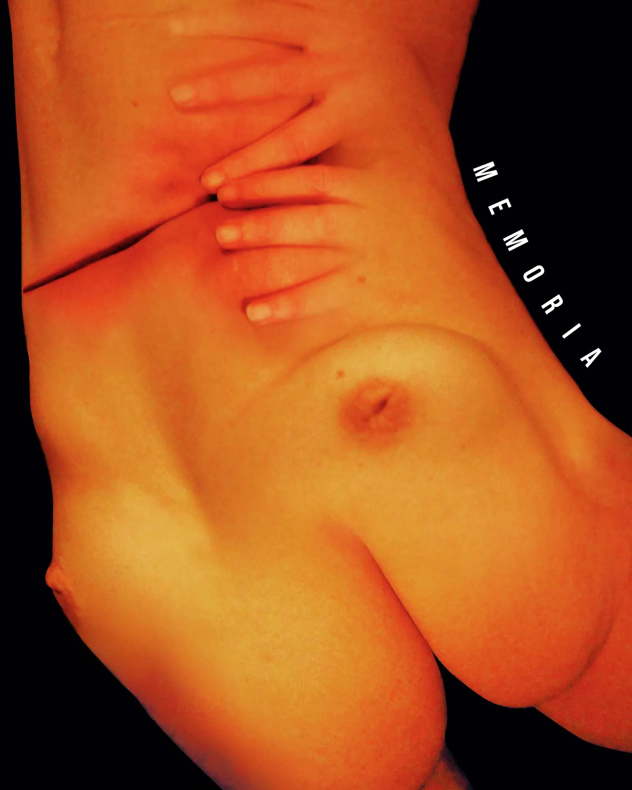

Cadáver Exquisito
Conformada por una serie de fotografías de mujeres al desnudo y edición digital, en donde a través de su singularidad y diferencias el cuerpo se manifiesta.
Rebelión, resiliencia, memoria que se fusionan para dar forma a un ensayo político y fotográfico por nuestro derecho a ser diferentes y a gozar de igualdad.
Ver la serie